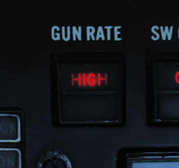
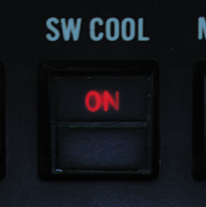

武器系统和武器使用总览¶
M-61“火神”六管加特林航炮¶
由美国海军摄影师 Kristopher Wilson 拍摄（041129-N-5345W-034）¶
M-61 “火神” 是一种六管液压驱动的 20 毫米航炮，能以每分钟 6000 发的速度射击。
M-61 安装在 F-14 驾驶舱下方的机身内，炮口位于机身的左下侧。航炮的弹鼓内备有 676 发 20 毫米炮弹，并且航炮会保留射击后留下的药筒。
航炮安装的角度比武器基准线（ADL）略高3度，F-14 在狗斗中进行提前射击时便能体现这样安装航炮的先天优势。
航炮击发无需经过 WCS，当武器选择开关选择 GUN 档位时，且主军械开关拨到 ON 档位，飞行员就可以通过按下驾驶杆中的扳机来发射机炮。但 WCS 可以在 HUD 上显示航炮攻击标识以提高射击精度。航炮在空对空和空对地模式下，每一种模式有两种可用的瞄准标识。空对空模式下使用的是手动空对空瞄准标识和实时瞄准标识（RTGS）。
选择航炮作为武器时，HUD 底部会显示一个大写的 “G” 标识，这个标识下方显示了以百发为单位的剩余炮弹数量。

除了 HUD 上的标识外，飞行员右垂直控制台上的航炮弹药计数器也显示了剩余弹药数量。指示器从 650 开始倒数，但可以通过旋转指示器下方的旋钮来重新调整至所需的炮弹剩余数量。
{kind=link}
航炮的两种模式对应的射击速率分别是每分钟 4000 发和每分钟 6000 发。低射速模式通常用于对地攻击，高射速模式用于对空攻击。可以通过 ACM 面板上的 GUN RATE（航炮射速）开关切换，面板上也会显示当前选定的模式。选择 ACM 模式将会自动选择航炮高射速模式。每次按下扳机的最大连射开火数值可以设置为50、100、200或无限制。默认值为200发，玩家可以通过地勤来变更为其它设置。
- 注意
DCS 中通过膝板来设置。
手动空对空准星
在手动模式下，HUD 上显示了 ADL、武器标识以及手动准星。在空对空模式下选择航炮后，按下左油门握把上的 CAGE/SEAM 按钮来进入此模式。在手动模式下飞行员使用手动准星作为参考，操纵飞机来击中目标。实际目标距离和抬高/下压量需要飞行员自己估算。
飞行员可以调整手动准星的位置来选择所需的抬高/下压量角度。通过飞行员右垂直控制台上的准星偏移量设置面板来调定所需抬高/下压量，一般会将这个值设置为53毫弧度，以保持手动准星与航炮瞄准线位置对齐。

实时航炮准星（RTGS）
实时航炮准星模式是航炮在空对空模式下的标准射击模式。
在 RTGS 模式中，如果 WCS 无可用目标数据，WCS 会计算炮弹飞行轨迹，并显示炮弹在飞行1000英尺和2000英尺后将会通过的位置。十字准星指示1000英尺处炮弹通过的位置，而菱形标识则指示2000英尺处炮弹通过的位置。
如果 WCS 可以（使用 STT 模式跟踪目标）获取目标数据，当目标当前距离4000英尺内时，准星会替代显示的炮弹通过的位置。菱形标识则显示雷达的视线（也就是目标的位置）。这意味着飞行员需要控制飞机将十字准星对准目标来击落它。
除了根据目标位置计算航炮射击诸元外，RTGS 准星还将计算并显示目标距离上航炮炮弹通过的位置与目标实际位置之间的偏差（注：目标与本机的当前距离称为“目标距离”，航炮炮弹的飞行距离与目标距离相同时，炮弹所处的位置叫做 BATR，即目标距离上航炮炮弹通过的位置，见首字母缩写和简称）。当 WCS 计算出炮弹飞行至目标所处的位置时，原本用作指示目标位置的菱形标识会切换为指示目标距离上航炮炮弹通过的位置（BATR），同时，菱形指示框会闪烁。
利用这个标识便可以判断出，要击中目标，炮弹需要通过的位置。如果航炮成功命中目标，菱形标识应正好位于目标上方并闪烁，表示炮弹穿过了目标位置。
手动空对地准星

手动空对地准星的工作方式与手动空对空准星相同，只不过它是由 RIO 使用左侧垂直控制台上的武器控制面板 ATTK MODE 旋钮开关设置的。选择空对地模式时，通过 ATTK MODE 拨扭选择 MAN 档位， HUD 中会显示与空对空航炮准星相同的标识，唯一的区别是，HUD 右侧增加了当前雷达高度指示。航炮准星的偏移量需要考虑到空速、目标距离和俯冲角度，使用手动空对地模式进行攻击时，应根据这些数值，参考预制的航炮攻击参数进行对照设置。
计算机/引导模式

使用计算机/引导模式时，WCS 会连续计算航炮及其他空对地武器命中点。与手动空对地准星一样，计算机/引导模式是由 RIO 选择 ATTK MODE 旋钮开关上的 CMPTR-PLT 档位来启用的。
在此模式下，AN/AWG-9 雷达会隶属到武器命中点并对准武器命中点来进行精确测距并在 HUD 上显示命中点位置。
HUD 上的十字准星指示武器实时命中点，菱形标识则代表超出武器射程。菱形消失表示十字准星指向的目标正处于航炮射程内。HUD 上的拉起提示符将根据飞机的高度垂直移动，当拉起提示符高于/处在武器命中点 (十字准星）的位置时，则表示高度过低，飞行员需要立刻拉起避免撞击地面以及目标过近无法保证安全的进行攻击。
HUD 右侧显示了气压高度标度。
航炮混合模式

在选择了其他空对地武器的情况下，将武器控制面板（在 RIO 左侧垂直控制台上）的 A/G GUN 开关拨至 MIXED 档位，便可以同时使用航炮和其他武器。在设置为 MIXED 档位后，按下扳机可发射航炮，但是 HUD 中将不会显示航炮瞄准标识，因为 HUD 标识正被用于显示当前选中武器的投放数据。使用航炮混合模式时，HUD 中的 ADL 是航炮唯一的参考标识，飞行员需要自行估算炮弹命中点。
空对空武器¶
空对空导弹的 HUD 标识¶
上图展示了在空对空显示模式下选择了“不死鸟”导弹时的 HUD 标识。
作为标准，HUD 左侧显示了以百节为单位的 接近率 ，范围从-200节到+1000节。 < 符号指示当前的接近率。
另外，HUD 右侧显示的 目标距离标度 ，根据标度比例显示目标距离，如上图所示，当前距离标度为10海里。标度上的 > 符号指示当前目标的距离，短横（ - ）符号分别指示当前选中武器的最大和最小发射距离。
随动准星 （空对地模式和使用航炮时被称为十字准星）和 目标指示符 标识根据不同情况有不同含义。
如果雷达正以 STT 模式跟踪目标， 随动准星 会显示 TCS（电视摄像套件）的视线，选中 AIM-9 时例外。选中 AIM-9 时随动准星则会指示 AIM-9 导引头的视线。
如果雷达以 STT 模式跟踪目标，目标指定符 指示雷达当前视线，如果雷达无跟踪目标，则指示 TCS 视线。
因此，TCS 的视线可以由随动准星或目标指示符指示，这取决于雷达是否有 STT 目标，而在选中 AIM-9 的情况下则完全不显示（TCS 视线）。
AIM-7“麻雀”导弹¶
由美国海军摄影师 Joshua Karsten 拍摄（041108-N-8704K-008）¶
AIM-7“麻雀”空空导弹是一种超音速助推/滑翔导弹，它能在全天候条件下攻击飞机和导弹。AIM-7 “麻雀”是一种中程空对空导弹，AIM-7E 最大射程超过16海里（30千米）而 AIM-7F 和 AIM-7M 最大射程超过38海里（70千米）。AIM-7 的全天候能力来自于导弹使用雷达制导，更确切地说是半主动雷达制导（SARH）。这意味着“麻雀”只有依赖 AN/AWG-9 为其照射目标，其导引头才能跟踪目标的雷达反射信号。
F-14 可以在机身上的四个专用保形挂架和左右翼套挂架上分别挂载一枚 AIM-7E、AIM-7F 或 AIM-7M 导弹。
除了导弹射程，导引头和战斗部的各种改进之外，不同版本之间的主要区别在于 AIM-7F 及其改进型除了 CW（连续波）外也可以通过脉冲多普勒进行制导。
导弹发射准备¶
{kind=link}
发射 AIM-7 导弹前，需要在前座飞行员 ACM 面板上选择 MSL PREP-ON 按钮来开始准备程序。这将指令 WCS 开始准备 AIM-7 和 AIM-54 导弹。
按下导弹发射准备按钮时，对于 AIM-7 来说，WCS 将为导弹提供预热电子元件和陀螺仪所需的电力。WCS 还将会通过导弹导轨后端的发射器向导弹尾部的接收机输入 CW 雷达视频。此视频用于将 AIM-7 导弹调谐到 RIO 在 DDD 面板中选定的 CW 频率上。当一枚导弹调谐并准备完毕时，ACM 面板对应的挂架状态标识旗将变成白色，表示对应挂架上的导弹已经准备完毕。
发射模式¶
F-14 上有两种可用发射模式用于 AIM-7 ，分别是正常模式和瞄准轴模式。飞行员使用驾驶杆武器选择开关上的 SP/PH（“麻雀”/“不死鸟”）档位来选择发射 AIM-7。WCS 将自动选择一枚“麻雀”来发射。
按下武器选择开关会将选定的武器从 SP 切换至 PH，反之亦然。如果武器控制系统有 STT 目标，那么，除非在 ACM 面板的 MSL MODE（导弹模式）开关上选择 BRSIT（瞄准轴），否则 WCS 将自动使用正常模式进行发射。所有其他情况下将使用瞄准轴模式发射导弹。
正常模式¶
{kind=link}
因为正常模式是用于攻击使用 STT 跟踪的目标，所以 WCS 可以使用 CW（连续波）或脉冲多普勒进行制导。在正常模式下使用 CW 模式时，AN/AWG-9 雷达使用专用 CW 天线，它能比泛指天线更直接地聚焦照射跟踪的目标。虽然 CW 模式是所有 AIM-7 型号的正常制导模式，但使用 AIM-7F 和 AIM-7M 导弹时，可以选择脉冲多普勒制导模式。
RIO 可以在武器控制面板上将 MSL OPTIONS 开关设置到 SP PD（“麻雀”/ 多普勒）档位来切换至脉冲多普勒制导。选择 SP PD 将使 WCS 采用脉冲多普勒照射来为“麻雀”导弹提供制导。
无论采用哪种制导模式，WCS 都会计算导弹的 LAR（发射允许区间），并在 VDI 和 TID 上显示导弹发射距离。HUD 显示菱形目标指定符、当前目标距离、Rmin（最小发射距离）和 Rmax（最大发射距离），而 VDI、DDD 和 TID 显示攻击引导符号系统以及上述的导弹 LAR 指示。
瞄准轴模式¶
瞄准轴模式使用 AN/AWG-9 雷达上的 CW 泛指天线并使导弹跟踪泛指区内反射信号最强的目标。除了在瞄准轴模式下发射外，无论是在发射前还是在发射后，雷达同样还将在目标丢失后切换到泛指模式，飞行员可以通过将目标保持在泛指区域内来尝试继续引导导弹。
AIM-9“响尾蛇”导弹¶
由美国海军摄影师 Kristopher Wilson 拍摄（050112-N-5345W-066）¶
AIM-9“响尾蛇”导弹是一种近程空空导弹。它使用红外导引头来锁定目标的红外特征，使其无论昼间还是夜间都能跟踪目标。
F-14“雄猫”可以携带从 AIM-9D 到 AIM-9M 的所有海军版的 AIM-9“响尾蛇”导弹。Heatblur F-14“雄猫”目前可以携带 AIM-9L 和 AIM-9M 导弹。
F-14 可以在 挂点 1A 和 1B 以及 挂点 8A 和 8B 上携带 AIM-9 导弹。1号挂点和8号挂点是翼套挂架，每个翼套挂架可携带两枚 AIM-9 导弹，总计四枚。挂点 1A 和 8A 是专门用于仅携带 AIM-9 的挂点，并且通常仅携带两枚，让挂点 1B 和 8B 挂载其他武器。
导弹发射准备¶
{kind=link}
发射 AIM-9 前需要启用导引头冷却。按下飞行员 ACM 面板的 SW COOL 按钮开关，或在相同面板选择 ACM 模式来启用导引头冷却。按下后会指令冷却导弹导引头，挂点状态标识旗立刻显示就绪，但使导引头发挥全部性能需要进行至少60秒冷却。
导引头模式¶
AIM-9G 换装了能够进行响尾蛇扩展搜索模式（SEAM）的导引头，F-14 携带的后续所有响尾蛇导弹都能使用此模式。SEAM 允许导引头解锁并在导引头限制（离 ADL 40°）内跟踪目标，使得飞行员能提前瞄准目标，从而提升导弹的性能。SEAM 同时还允许 F-14 中的 WCS 将导引头隶属到 ADL 20° 内已锁定的目标上，来实现偏离瞄准轴锁定。
F-14 上的 AIM-9 依然可以使用早期的瞄准轴模式，该模式下导引头保持隶属于 ADL（2.5°视场），但通常会选用 SEAM 来扫描 ADL 周围或对目标进行跟踪。SEAM 没有可视化的标识提供给飞行员并且 SEAM 用于扩展导引头的有效视场。就像所有响尾蛇导一样，目标探测是根据音调来提示的。在探测时会出现低吼音调，当导引头指向红外源时，音调会升高。
导弹操作¶
通过飞行员驾驶杆上的武器选择开关来选择 AIM-9 “响尾蛇”导弹。按下武器选择开关可以切换用于发射的 AIM-9 导弹，ACM 面板上相应的状态窗口中，标识旗指示了当前选中的导弹。使用 AIM-9 时，HUD 使用菱形标识指示跟踪的目标，使用准星（十字准线）指示当前导引头指向的位置。如果 WCS 跟踪目标包含距离信息，那么 HUD 还将显示目标距离、Rmin（最小发射距离）和 Rmax（最大发射距离）。如果 WCS 有跟踪目标，那么 VDI，DDD 和 TID 将显示攻击引导符。
不激活 ACM 模式的情况下，按下飞行员 ACM 面板的 BRSIT 开关来选择无 SEAM（不扫描）的基础瞄准轴模式。在此模式中飞行员将 ADL 对准目标，当高频音调响起时开火。
如果未使用 BRSIT 按钮开关或 ACM 模式处于激活状态，AIM-9 将使用 SEAM ，并且使用 双D 扫描模式。如果 WCS 有锁定的目标，导引头会扫描雷达或 TCS 视线周围，否则导弹导引头会在 ADL 周围进行扫描。

飞行员可以按下左油门握把上的 CAGE/SEAM 按钮来使用 SEAM 模式锁定目标。ACM 面板的 SEAM LOCK 指示灯将会亮起并将导引头解锁4.5秒，并允许导引头跟踪处在视场内的目标。如果未探测到红外源，则导弹导引头会重新锁定，且 SEAM LOCK 指示灯熄灭。
如果成功锁定，音调将持续响起，SEAM LOCK 灯保持亮起，飞行员按下驾驶杆扳机来发射导弹。发射后，下一枚 AIM-9 将会被自动选中。
AIM-54“不死鸟”导弹¶

由美国海军摄影师 Felix Garza Jr. 拍摄（030320-N-4142G-013）¶
- 注意
照片中的导弹还未装上前部弹翼。
AIM-54 “不死鸟”导弹是一种远程空空导弹，它本来是为流产的 F-111B 舰队防空战斗机计划而设计的。F-111B 计划以失败告终，F-111B 的 AIM-54 导弹与配套的 AN/AWG-9 WCS 最终被用于装备在 F-14 身上。
F-14 最多可携带6枚 AIM-54 导弹，左右翼套挂架上各搭载一枚，其余四枚搭载于机身武器导轨上。由于导弹冷却系统的设计原因，两个机身前排挂架必须总是挂载导弹，这意味着如果前排挂架不挂载导弹，机身后排挂架便无法使用。而翼套挂架内置了单独的冷却系统。
“不死鸟”导弹支持使用 STT（单目标跟踪）攻击单个目标和 TWS（边搜索边跟踪）攻击多个目标。
AIM-54 有两个不同的型号——AIM-54A 和 AIM-54C。Heatblur Simulations 的 F-14“雄猫”模拟了这两种型号的“不死鸟”，此外，我们为 AIM-54A 单独模拟了 Mk47 和 Mk60 火箭发动机。装备这两种不同型号发动机的 AIM-54A 在射程上有些差异，而 AIM-54C 和 AIM-54A 的主要区别则是 C 型使用了数字信号导引头，而不是模拟信号导引头，从而提升了性能。AIM-54C 还装有一个改进的无烟 Mk47 火箭发动机。
使用 PD STT 模式在高空攻击战斗机大小的目标时，AIM-54 的射程超过60海里。而使用 TWS 攻击多目标时，射程缩短到约50海里。攻击大型目标时，射程会增加，反之，攻击小型目标时，射程会缩短。
如果使用主动模式发射，根据目标的大小射程也会稍有差异，例如攻击战斗机大小的目标射程会缩短至大约 10 海里。需要注意的是，在 SARH 模式下使用主动模式发射后，如果导引头没有探测到目标，那么导弹将会返回 SARH 模式。
导弹发射准备¶
选择飞行员 ACM 面板上的 MSL PREP 按钮开关或激活 ACM 模式开始 AIM-54 导弹的准备。这将接通导弹的电源和冷却系统，同时也会启动导弹的机内自检（BIT）。
与 AIM-7 一样，在发射 AIM-54 前，需要通过装在武器导轨末端的发射器向导弹尾部的接收机发送调谐数据。整个导弹准备周期大约需要2分钟来完成，完成后飞行员 ACM 面板上相应的状态标识旗窗口会指示 AIM-54 准备完毕。
发射模式¶
AIM-54 的导引头能够使用半主动雷达制导（SARH）和主动雷达制导（ARH）模式。
通常来说，导弹的发射至弹射（LTE），也就是从按下扳机开始，直到导弹弹射出导轨所需的时间，是3秒钟。但 ACM 主动模式下发射则是个例外，如果目标在离 ADL 15°内，LTE 会缩短至1秒。
TWS SARH/ARH¶
在 TWS 模式下，AN/AWG-9 可以支持同时对6个不同目标发射6枚 AIM-54 导弹。在 AIM-54 跟踪的第一阶段，导弹接收由 AN/AWG-9 雷达发射的制导指令和目标的雷达反射波来进行半主动制导。当目标进入导弹导引头 ARH 模式的距离内后，AN/AWG-9 会命令导弹切换至 ARH。
如果 AN/AWG-9 雷达不发送这条指令，导弹便无法切换至 ARH 模式。然而，作为备用措施，AN/AWG-9 会继续向导弹传输制导指令，以防导弹无法自主截获目标。这说明 AIM-54 本质上并非发射后不管，但可以认为导弹进入 ARH 模式后能够自主攻击目标。
PD STT SARH¶
在 PD STT（脉冲多普勒 单目标跟踪）模式下，AIM-54 全程使用 SARH 模式，相比 TWS 模式，导弹以会更高的频率接收雷达制导指令，并且由于使用单目标跟踪，目标会受到持续聚焦照射。使用 PD STT 可以略微增加 AIM-54 导引头的有效探测距离。
主动雷达制导（ARH）¶
{kind=link}
无论是在 TWS 还是在脉冲多普勒 STT 模式下，AIM-54 可以在发射后接收指令立刻令开机，这是通过在发射导弹前，将 MSL OPTIONS 开关拨至 PH ACT 档位来实现的。这会让 WCS 在导弹发射后传输的第一条制导指令中立刻命令 AIM-54 进入主动雷达制导。如果从目标后半球6海里内，或目标前半球10海里内发射导弹，WCS 会自动发送这条指令，而不再使用 SARH 模式。
与另外两种 SARH 模式下一样，如果导弹导引头未能主动截获到目标，导弹会返回 SARH 模式，直到导引头主动截获目标。
- 注意
当 AIM-54 在空中时，将 MSL OPTIONS 开关拨动至 PH ACT 档位并不会命令 AIM-54 进入主动制导，PH ACT 档位仅可以在导弹发射前设置。
ACM 主动模式¶
AIM-54 的最后一种工作模式是 ACM 主动模式，在这个模式下，导弹在发射前就已经接收指令开机，因此导弹在该模式下才是真正的射后不管。AIM-54 导弹除了在发射前接收开机指令外，还会从 WCS 额外接收一条预对准的指令，将导引头指向当前可用的 WCS 跟踪目标。
在飞行员 ACM 面板上按下 MSL MODE 按钮开关选择 BRSIT（瞄准轴）、在无 WCS 跟踪目标时进入 ACM 模式、使用非脉冲多普勒雷达或 TCS 跟踪模式时，导弹便会进入 ACM 主动模式。无跟踪目标的情况下使用瞄准轴模式或 ACM 模式时，导弹会沿着 ADL 发射，并锁定它探测到的第一个目标，但如果使用非脉冲多普勒雷达跟踪目标，发射前导引头会提前对准跟踪目标。
ECM 模式¶
在所有引导模式中，如果受到干扰，导引头会自动切换至被动 ECM 寻的模式，来对目标进行角跟踪，直到导引头能重新使用 SARH 或 ARH 跟踪目标。这个切换过程是自动完成的，不需要机组操作，操作员也不会收到提示。
导弹操作¶
在飞行员驾驶杆上选择 SP/PH（麻雀/不死鸟）开关档位，然后按下选择开关来从 SP 切换至 PH 来选择 AIM-54 导弹。再次按下武器选择开关可以重新选择 SP。
WCS 无跟踪目标的情况下使用瞄准轴或 ACM 主动模式发射 AIM-54 时，除了用于瞄准导弹的 ADL 外，HUD 上不会显示任何标识。
在 STT 模式下，且 WCS 有跟踪目标时，HUD 上会显示目标指示符，如果 TCS 也有跟踪目标，那么目标上会显示随动准星。前者指示了 WCS 跟踪目标，后者指示了 TCS 的视线。HUD 右侧的距离标度上指示了目标当前距离、Rmin和 Rmax，而 VDI、DDI 和 TID 上则显示了攻击引导标识。
TWS¶
在 TWS 模式下使用 AIM-54 时，WCS 会自动分配跟踪目标的优先级，给每个目标指定一个发射序号，表示导弹的发射顺序。向第一个目标发射导弹后，目标上的发射序号会消失，所有其他目标的发射序号分别减少 1。
依次对每个目标按下一次扳机来继续攻击跟踪目标 2 至 6，等前一枚导弹离轨后再按下扳机，依此类推直到所需发射的导弹全部发射完毕。
导弹发射后，跟踪目标右侧的发射优先级数字会被替换为 TTI，也就是预计命中时间，这是计算出的导弹命中目标所需的时间。
此外，当 AN/AWG-9 向导弹发送开机指令时，TTI 数字将会闪烁，数字闪烁表示跟踪目标的导弹已经接收指令使用主动雷达制导模式对目标进行跟踪。导弹何时进入主动雷达制导取决于 DDD 中 TGTS 开关的设置。开关 SAMLL 档位为 6 海里、NORM 档位为 10 海里、LARGE 为 13 海里。开关需要在导弹发射前进行设置。
正被导弹攻击的目标会保持高亮，直到预计命中时间 + 15秒为止，超过预计命中时间 + 15秒后，VDI、DDD 和 TID 上会显示脱离 “X” 标识。
TID 标识信息详见 TID 标识符 。
通过 CAP 设置可以强制 WCS 在发射序列中加入一个目标，还可以强制 WCS 排除某个目标，不对其进行攻击，同样也是在 CAP 面板上设置。此外，勾选一个目标并按下 RIO 武器控制面板上的 NEXT LAUNCH 按钮，可以命令 WCS 将该目标作为发射序列 1 号优先级目标。
如果 WCS 不处于 TWS AUTO 模式，那么 WCS 会自动切换至该模式来接管 AN/AWG-9 雷达，照射所有攻击目标。除了跟踪目标数字编号外，TID 也会显示转向质心来指示 TWS 栅状扫描的中心点。
HUD 和 VDI 上显示了一个转向提示来引导飞行员控制飞机，使雷达以最优条件照射目标，同时 HUD 和 VDI 上也显示了本机至 1 号目标的距离、Rmin 和 Rmax。TID 上显示了完整的攻击符号标识，包括目标优先级序号和每个目标的最佳发射距离，详见 边搜索边跟踪（TWS）。
DCS 中的 AIM-54¶
HB DCS F-14 包括了单独定制的 AIM-54A 和 AIM-54C 导弹，其中 AIM-54A 包含有两种不同版本的火箭发动机可供选择。导弹的空气动力学和发动机性能经过了大量的研究和计算机模拟以在空气动力学方面使上述的三枚导弹的表现显得更加真实。
在导弹导引头和飞行曲线方面我们与 Eagle Dynamics 展开合作，来使我们的 F-14 AN/AWG-9 雷达在一定程度上控制 AIM-54。在 DCS 中将意味着以下几点：
在 TWS 模式中导弹将使用 AN/AWG-9 提供的制导飞向目标，直到命中时间只剩下大约 16 秒时为止，当到达这个时间后，如果目标仍在雷达的扫描区内，那么 AN/AWG-9 将会告知导弹开机。AN/AWG-9 发送 ATC 确切的距离取决于 TGTS 开关所处的档位，TGTS 开关详见上文中的描述。这就导致在攻击过程中，直到导弹进入主动雷达制导模式前，目标不会收到任何雷达告警提示，当导弹进入主动模式后，目标的雷达告警接收机将会收到一枚导弹正在进行攻击的警告。如果目标在特定的距离外，AIM-54 将会高抛以获得更远的射程。设置不同的导引头主动雷达制导距离将会影响到目标的反应时间，但同样也会影响到需要继续为导弹提供制导的时间。
在 PD-STT（脉冲多普勒 单目标跟踪）模式下，AIM-54 发射后将使用纯半主动模式进行制导，并在全程使用 PD-STT 模式进行制导直到命中目标（不会进入主动模式）。这表示被攻击的目标将会在 AIM-54 离轨后立刻通过雷达告警接收机收到正在被 AN/AWG-9 攻击的警告。正如 TWS 模式一样如果目标在特定距离外导弹将会采用高抛弹道。
其他所有模式以及在 10 海里内的目标（或处在 ACM 或 PH ACT），AIM-54 将会在离轨后立刻进入主动模式，目标飞机将会立刻看到导弹本身的雷达正在锁定攻击它。在前述模式下，导弹不会采用高抛弹道，因此射程比其他两种模式要短很多。
空对地武器¶
尽管 F-14 是主要是按照空优战斗机和截击机来设计的，但它从一开始就通过了评估测试，可以挂载所有美国现代 Mk-80 系列通用航空炸弹（GP）。此外，它还可以挂载 Mk-20 “石眼”集束炸弹以及五英寸折翼式航空火箭弹（FFAR）。
随着 F-14 的作战职能逐渐转变为对地精确打击任务，它也可以挂载几种安装了炸弹制导装置（GBU）的 Mk-80 系列航弹，准确的说，是这些航弹的激光制导型号。
空对地武器设定¶

空对地武器投放是由 RIO 使用左侧垂直控制台中的武器控制面板来设置的。
通过面板顶部的 WPN TYPE 拨轮来选择投放武器的类型，将其转动到对应的档位。转动到对应档位将配置 WCS 使用所选武器的正确投放参数。
- 注意
Mk-81、Mk-82 和 Mk-83都分别有 “L”（低阻）和 “H”（高阻）的选项，以区分航弹的低阻和高阻型号。
在 DLVY MODE（投放模式）选择开关上，可以设置 STP / RPL（逐个/连发）和 SGL / PRS（单发/成对）投放选项。所有可能的组合如下：
STP 和 SGL - 驾驶杆上的航弹投放按钮，每按下一次投放一枚航弹。
STP 和 PRS - 与 STP 和 SGL 类似，投放按钮每按下一次投放一对航弹。这个模式只适用于对称的挂架， 1 号挂点对应 8 号挂点， 3 号挂点对应 6 号挂点， 4 号挂点对应 5 号挂点。
RPL 和 SGL - 适用于所有攻击模式，通过 QTY（数量）拨轮和 INTERVAL（投弹间隔）拨轮设置投放数量和间隔（单位是毫秒）后，按住航弹投放按钮，飞机会以设定的投放间隔和数量进行投放。
RPL 和 PRS - 与 RPL 和 SGL 类似，但按住航弹投放按钮会投放一对航弹，使用 QTY 拨轮来设置需要投放的航弹总数。
使用 MECH FUSE 开关来选择挂载启用哪种机械引信。NOSE 启用头部引信，SAFE 禁止引信解除保险，而 NOSE/TAIL 同时启用头部引信和尾部引信。
使用 ELEC FUSE 开关来设置投放挂载的电子引信模式：
SAFE - 禁用航弹电子引信。
VT - 为支持空爆模式的挂载设置爆炸高度。
INST - 选择瞬时模式。
DLY 1 - 选择预设的延时 1。
DLY 2 - 选择预设的延时 2。
INTERVAL 和 QTY（数量） 拨轮分别用于设置挂载投放间隔（单位为毫秒）和投放数量，这两个设定适用于 DLVY MODE 段落中所述的投放模式 。
最后，6 个 STA SEL（挂点选择）开关用于选择投放挂载（或抛弃挂载）的挂架。将挂架对应的开关拨至 SEL 档位来选择这个挂架进行投放。然而，选择 1 号挂点和 8 号挂点时，应将对应的开关拨至 B 档位。开关的 SW 档位曾用于抛弃 AIM-9 “响尾蛇”导弹，但现已无法操作。
- 注意
在 DCS 中，可以认为 F-14 挂载的所有类型的航弹都拥有两种引信，所以投放航弹时需要设置机械引信和电子引信。使用 GBU 航弹、Mk-20 系列以及 Mk-81 和 Mk-84 系列的航弹时，需要将机械引信设置到 N 或者 N/T 档位，而使用 Mk-82 AIR（减速伞）和 Mk-82 “蛇眼”炸弹时，选择 N 档位会使投放的航弹自由下落，而选择 N/T 会启用航弹尾部的增阻部件。
空对地武器投放¶
飞行员在显示控制面板中选择了 A/G 模式后飞机就会进入空对地投放模式。在磁带数据读入（需约30秒）完成后，WCS 将进入空对地模式并且在显示器上显示相关的符号。
除非飞行员已经选择了其他武器，否则 HUD 会自动切换至（对地）挂载模式（HUD 中显示 ORD）。所有其他投放选项都由后座 RIO 设置。
RIO 驾驶舱内的 ATTK MODE 选择旋钮用于选择攻击模式，F-14 中可用的攻击模式分别是：
CMPTR TGT - 计算机目标模式，这是一种半自动计算机引导模式，类似于新型战机中的 CCRP（连续计算投放点）模式。
CMPTR IP - 计算机起始点模式是 CMPTR TGT 模式的扩展模式，它使用一个已知的起始点（IP）作为挂载投放参考点。通常在预期目标难以被目视定位，但其附近有易于识别的参考点/地标的情况下使用。
CMPTR PLT - 计算机引导模式，是一种由计算机引导、飞行员手动操控的导引模式，此模式使用 WCS 在 HUD 上指示挂载的命中点。它类似于新型战机中的 CCIP（连续计算命中点）模式。
MAN - 手动，手动模式是备用模式。该模式下，HUD 上会显示一个由飞行员设置的下压角度可调的准星（十字准星）。用于系统出现故障，其他模式无法启用时。
D/L BOMB - 数据链投弹模式是一种驾驶员通过数据链路的提示来操纵飞机，在远程操纵下完成挂载投放的自动模式（DCS中尚未实装此功能）。
计算机目标模式¶

计算机目标模式允许飞行员指定目标，然后由 WCS 引导飞行员向目标投弹。 此模式适用于所有空对地挂载，包括火箭弹。
选择计算机目标模式时，HUD 将显示菱形目标指示符、一条穿过速度矢量符的航弹下落线（BFL）和挂载命中点准星（十字准线）。
飞行员调整飞机航向，将目标置于 BFL 上来指定目标。 然后，用飞行员驾驶舱壁上的目标指定开关的 UP/DN 来调整目标指示符位置，直到指示符覆盖目标。这时，按下目标指定开关至 DES 档位来指定目标。
指定目标后，菱形目标指定符会相对地面稳定，并且 AN/AWG-9 会指向指定的位置进行测距。 BFL 会保持在指定的目标上，而十字准星和飞机速度矢量继续跟随飞机移动。 此外，HUD 会在 BFL 上分别显示高低投放标识。
现在飞行员需要控制飞机，将速度矢量和十字准星置于 BFL 上，直到两个投放标识接近速度矢量符和准星。低投放标识穿过速度矢量符时，表示即将投弹，此时飞行员应按下并按住航弹投放按钮，授权 WCS 投放挂载。当高投放标识与速度矢量符位置重合时，如果投放按钮处于按下状态，WCS 将自动投放选定的挂载。
随着飞机高度降低，HUD 上的拉起标识（开口方向朝上的方括号）朝着速度矢量符向上移动。当它与速度矢量符重合时，表示飞机低于投放挂载的安全高度。
计算机起始点模式¶
功能上与计算机目标模式相同，区别在于计算机起始点模式指定预设起始点（IP），而不是指定目标实际位置。这个 IP 在起飞前通过数据链路或由 RIO 在 CAP（计算机位址面板）中手动设置。
IP 航路点应该是易于飞行员目视辨认的地形特征，即使目标不易于辨认。
RIO 使用 CAP 来设置 IP 航路点，操作与设置导航系统中其他航路点相同。（参见“一般设计和系统概述”中 AN/AWG-9 下的 CAP 部分，或本章节中的导航系统部分）
CAP 上 SPL 类别中的 IP TO TGT message（功能）与前缀按钮 ALT、RNG 和 BRG 一起使用用来读数和设置以下数据点：* ALT - 设置目标与 IP 航路点之间的高度差。* RNG - 设置目标相对 IP 航路点的距离。* BRG - 设置目标相对 IP 航路点的方位。
飞行员在 HUD 上目视指定 IP 点后，WCS 会根据 CAP 中 IP TO TGT 功能所设置的数据重新计算目标位置，并将菱形目标指示符移动到计算出的位置，使 HUD 显示的引导标识从 IP 航路点位置切换至目标实际位置。
此模式下的其他功能与计算机目标模式下的功能相同。
计算机引导模式¶
计算机引导模式通过 WCS 连续计算并在 HUD 中 显示当前配置挂载的命中点。
选择计算机引导模式时，HUD 中的准星（十字）显示了当前挂载的实时命中点。WCS 设置为发射火箭弹时，如果菱形目标指示符出现在十字准星上方，则表示命中点在火箭弹射程外。与计算机目标和计算机起始点模式中一样，如果拉起标识位于速度矢量符上方，则表示飞机低于安全投放高度。
飞行员需要操纵飞机，将 HUD 中的命中点准星置于目标上，并按下武器发射扳机来攻击目标。
使用火箭弹攻击时，飞行员应该等到准星上的菱形消失，这表示命中点在火箭弹的射程内，然后使用扳机发射火箭弹。
手动模式¶

其他模式不可用时，手动模式将作为备用模式使用。
手动模式与计算机引导模式的基本原理相同，飞行员应控制飞机，将准星置于目标上方。虽然手动模式下 WCS 不会更新准星的位置，但可以根据所需的攻击速度、俯冲角度和投放高度来设置十字准星相对 ADL（武器基准线）的偏移量。
这个偏移量是由飞行员估算或根据投弹数据表，然后在右侧垂直控制台中的准星提前量设置面板上调定的。
Mk-81、Mk-82、Mk-83 和 Mk-84 通用航空炸弹¶
由美国海军摄影师 Justin S. Osborne 拍摄（030321-N-0382O-506）¶
Mk-80 系列航弹是美国海军与盟国的标准通用航弹，这个系列的航弹在越战期间首次投入使用。Mk-82 还能够装备增阻部件——使用折叠式高阻尾翼或减速伞尾部组件使航弹减速，让飞机在低空投弹时有更多时间脱离，避免爆炸波及载机自身。Mk-82 航弹的这些高阻型号在 DCS 中被称为 MK-82“蛇眼”（高阻尾翼）和 MK-82AIR（减速伞）。
F-14 能够携带 Mk-80 系列中的各型航弹——从 Mk-81 到 Mk-84 。尽管设计时并没有考虑使用 F-14 执行对地攻击任务，但这些航弹从一开始就在 F-14 上进行了测试，并交付使用。
F-14 使用武器导轨（3号挂点至6号挂点）和翼套挂架下方的挂点来挂载航弹。导轨本身可以挂载 Mk-80 系列的四种航弹，而 Mk-81 至 Mk-83 也可以安装在武器导轨侧面的挂点上，也可以安装在翼套挂架连接的 TER 上。
所有的 Mk-80 航弹仅含有头部引信*，投放航弹时，应将 RIO 武器控制面板中的 MECH FUSE 开关设置到 NOSE（N）档位。 Mk-82AIR 和 Mk-82“蛇眼”型号使用尾部引信线来启用增阻部件，这意味着，如需使用增阻部件，应选择使用头部/尾部（N/T）机械引信。 *译注，仅针对游戏内的航弹，现实中的 MK-80 系列航弹拥有头部和尾部引信，游戏中未进行建模。
F-14 可挂载的不同航弹的总量取决于武器重量以及导轨上挂载的间距，实际载弹数量从18枚 Mk-81 或 Mk-82 到4枚 Mk-84 不等，这是因为 Mk-84 只能直接安装在导轨上。详细的挂载信息请参考下文中的 F-14 挂载示意图。
GBU-10、GBU-12、GBU-16 和 GBU-24 激光制导炸弹¶
由美国海军摄影师 Milosz Reterski 拍摄（040105-N-9742R-001）¶
GBU 是加装了导引头装置和前翼（用于控制）装置将 Mk-80 系列航弹转换为精确制导炸弹。F-14 挂载的 GBU （更准确地说是精确制导炸弹），分别是 GBU-10、GBU-12、GBU-16 和 GBU-24。
获得搭载和使用 LANTIRN 吊舱的能力后，F-14B 也通过了挂载 Mk-80 系列 GBU 衍生型号航弹的测试。GBU 可以通过 F-14 携带的 LANTIRN 吊舱来照射，也可由其他飞机或地面单位提供激光照射来摧毁目标。
F-14 挂载的 GBU 直接安装在武器导轨3号挂点到6号挂点的导轨上，这是因为 GBU 系列航弹相较常规 Mk-80 航弹来说，其大小有所增加，所以 GBU 系列航弹无法适配扩展挂架并安装在导轨上。如果挂载 GBU-16 或 GBU-16 大小以下的激光制导炸弹的话，那么每个武器导轨上都可以携带一枚航弹。如果需要挂载两枚 GBU-10 或 GBU-24，GBU-10 可以挂在两个前部导轨（3号挂点和 6号挂点），而两枚 GBU-24 必须分别挂在前部导轨的一侧和后部导轨的另一侧上，因为 GBU-24 的折叠翼面部件更大。
- 注意
GBU 激光编码可以通过 Heatblur DCS F-14 任务编辑器相关功能 或飞行员膝板来设置。
Mk-20“石眼”炸弹¶
Mk-20“石眼”和 Mk-80 系列航弹一样，是一种常规自由落体炸弹，但它携带的不是常规弹药，而是反坦克子母弹。“石眼”集束炸弹中包含 247 枚这种反坦克子弹药，Mk-20 使用雷达高度计在设定的高度释放子弹药，这种设计是为了将子弹药分散到更广的区域，增加杀伤效果。
引信激活高度只能由地勤人员在装载时调定，飞行员无法更改。投放“石眼”时，应将机械引信设置为头部引信（N）。
F-14 可以使用武器导轨、扩展挂架和翼套挂架连接的 TER 携带多达 10 枚 Mk-20“石眼”。
- 注意
FMU-140 引信设置将在武器系统相关代码完成后实装。
“祖尼”火箭弹¶
“祖尼”5英寸折叠翼航空火箭弹 （FFAR）是为了取代二战时期的高速航空火箭弹（HVAR）而开发的。模块化设计使它能安装不同的战斗部和引信。
每个 LAU-10 吊舱可以装载4枚“祖尼”航空火箭弹，这个吊舱可以使用齐射或连发模式开火，每个吊舱中发射一枚，或发射单个吊舱中所有火箭弹。
通过使用 TER，F-14“雄猫”可以在 1B、3、6 和 8B 挂点上携带 LAU-10 火箭弹吊舱，每个 TER 最多可携带两个（火箭弹）吊舱，但 3 号和 6 号除外，否则会与相邻挂弹架上的（火箭弹）吊舱冲突。使用 TER 是为了增加火箭弹吊舱与挂点之间的间距，以保证安全的发射火箭弹。然而，之所以不在 TER 上装载三个吊舱的原因是，如果在翼套挂架上连接 TER，其内侧挂点会与主起落架冲突，而 3 号和 6 号挂点上的 TER，如果内侧挂点连接吊舱则会与另一侧挂点冲突。
“祖尼”航空火箭弹由 RIO 使用武器控制面板设置，投放参数和选项与普通航弹一致，投放模式（DLVY 模式）开关用于配置火箭弹齐射模式。
BDU-33 训练弹¶
BDU-33 训练弹是一种用于模拟 Mk-82 通用航空炸弹的训练弹。F-14 中 BDU-33 可以挂在挂点3-6的 TER 上。
BDU-33 训练弹的投放流程与投放通用航空炸弹实弹没有区别。
特种弹药¶
ADM-141 TALD（战术空射诱饵）¶
由美国海军摄影师 Mark J. Rebilas 拍摄（041018-N-6213R-021）¶
ADM-141战术空射诱饵（TALD）是一种利用主动和被动方式模拟真实飞机信号的滑翔诱饵。TALD 有许多个版本，例如有一个版本发射箔条，另一个版本使用龙伯透镜来增大雷达截面积，用来伪装成一架更大的飞机。
TALD 所有的版本都需要在起飞前预编程，且 TALD 自身无动力推进，仅能使用折叠翼滑翔。
F-14 最多可携带4枚 ADM-141 TALD，3号至6号挂点可分别挂载一枚，每个挂架都需要连接 TER 来增加 TALD 和飞机机身的间距。
- 注意
目前在 DCS 中，TALD 只能向正前方滑翔，直到坠地。
LUU-2 降落伞照明弹¶
LUU-2 降落伞照明弹是一种空射照明弹，通过降落伞减速在空中停留，用于在夜间照亮地面。
F-14 可以携带多达16枚 LUU-2 照明弹，4 号和 5 号挂点上连接 TER 时最多可挂载 4 个 SUU-25 照明弹吊舱，其中每个 TER 最多能携带 2 个吊舱，以免与机身冲突。
LUU-2 降落伞照明弹的发射和设置方式与通用航空炸弹相同。
拉烟吊舱¶
拉烟吊舱用于空中表演，它模拟了 AIM-9 导弹在飞机航电上的显示。
选择 AIM-9 的瞄准轴发射模式，然后通过飞行员驾驶杆上的武器选择开关选择相应的武器挂点来启用和禁用拉烟吊舱。设置完成后，当主军械开启，飞行员便可以按下扳机来开始或者停止拉烟。
其他吊舱和副油箱¶
LAU-138 箔条适配器¶
LAU-138 箔条适配器 （也称为 BOL 导轨）由瑞典的 Celcius Tech 公司设计，LAU-138 旨在增强战机携带箔条对抗措施的能力。这个箔条布撒器的特殊之处在于箔条是通过机械动作布撒，而不是使用火药来发射的。
虽然每个适配器可以携带最多160包箔条，但它们并不是标准大小的箔条包，因此，弹射箔条时，每个挂架布撒器总共会弹射4包箔条。两个一组的 LAU-138 适配器每次弹射8包箔条，一共可以弹射40次。
适配器本身替代了常规的 LAU-7“响尾蛇”发射导轨，在不影响携载其他武器的能力下让 F-14 携载更多的箔条。虽然从技术上来说，（翼套挂架的）A 和 B 挂点都可以挂载 LAU-138，但在现实中，B 挂点无法连接 AIM-9 的冷却剂瓶，因此只有 A 挂点用于挂载 LAU-138 适配器。
更多关于 LAU-138 箔条适配器的信息以及使用，请查阅总体设计和系统总览章节下的 AN/ALE-29 和 AN/ALE-39 部分。
TACTS 吊舱¶
TACTS 是训练任务中安装在 LAU-7 导轨上代替 AIM-9 的分析吊舱，一般是 1A 和 8A 挂点上。通常会在飞机上成对携带 TACTS 吊舱，每侧各一个。
- 注意
DCS 中的 TACTS 吊舱没有实际功能，仅作为装饰。
FPU-1 油箱¶
FPU-1 油箱安装在 F-14 “雄猫”发动机短舱下方的 2 号和 7 号挂点。每个油箱能携带多达 2000 磅燃油，并且与其他挂载一样可以使用正常程序抛弃。
LANTIRN 吊舱¶
由美国海军摄影师 Jason Frost 拍摄（030122-N-9403F-002）¶
随着作战职能开始逐渐偏向精确对地攻击，F-14“雄猫”在20世纪90年代适配了 LANTIRN 吊舱。
Heatblur DCS F-14B“雄猫”上装备的是最早的集成在 F-14 上的 LANTIRN 吊舱，吊舱只能安装在 8B 挂点上，通过电路硬连线到 RIO 驾驶舱中的控制面板，以及硬连线至 TID/VDI 的视频输出源中。
更多关于 LANTIRN 吊舱的信息，请查看总体设计和系统总览中对应的内容。
CNU-188 外挂行李舱¶
CNU-188 外挂行李吊舱由副油箱改装而来，用于转场时携带设备和补给。F-14 的 4 号或者 5 号挂点上分别可以挂载一个行李吊舱，每个吊舱最大载重量为 350 磅。
- 注意
DCS 中尚未实装。
F-14 挂载示意图¶
武器 挂点 |
1A |
1B |
2 |
3 |
4 |
5 |
6 |
7 |
8B |
8A |
最大挂载量 |
|---|---|---|---|---|---|---|---|---|---|---|---|
AIM-9 |
1 |
1 |
1 |
1 |
4 |
||||||
AIM-7 |
1 |
1 |
1 |
1 |
1 |
1 |
6 |
||||
AIM-54 |
1 |
1 |
1 |
1 |
1 |
1 |
6 |
||||
Mk-81 |
2 |
4 |
3 |
3 |
4 |
2 |
18 |
||||
Mk-82 |
2 |
4 |
3 |
3 |
4 |
2 |
18 |
||||
Mk-82AIR |
2 |
4 |
3 |
3 |
4 |
2 |
18 |
||||
Mk-82“蛇眼” |
2 |
4 |
3 |
3 |
4 |
2 |
18 |
||||
Mk-83 |
1 |
3 |
1 |
1 |
3 |
1 |
10 |
||||
Mk-84 |
1 |
1 |
1 |
1 |
4 |
||||||
Mk-20 |
2 |
2 |
1 |
1 |
2 |
2 |
10 |
||||
GBU-10 |
1 |
1 |
2 |
||||||||
GBU-12 |
1 |
1 |
1 |
1 |
4 |
||||||
GBU-16 |
1 |
1 |
1 |
1 |
4 |
||||||
GBU-24 |
1 |
1 |
2 |
||||||||
BDU-33 |
3 |
3 |
3 |
3 |
3 |
3 |
18 |
||||
LAU-10（祖尼） |
2 |
2 |
1 |
2 |
7(28) |
||||||
ADM-141A TALD |
1 |
1 |
1 |
1 |
4 |
||||||
SUU-25 F/A 照明弹吊舱 |
2 |
2 |
4(16) |
||||||||
LAU-138 箔条适配器 |
1 |
1 |
2 |
||||||||
拉烟吊舱 |
1 |
1 |
1 |
1 |
4 |
||||||
TACTS |
1 |
1 |
2 |
||||||||
LANTIRN 吊舱 |
1 |
1 |
|||||||||
FPU-1 油箱 |
1 |
1 |
2 |
||||||||
CNU-188 外挂行李舱 |
1 |
1 |
2 |